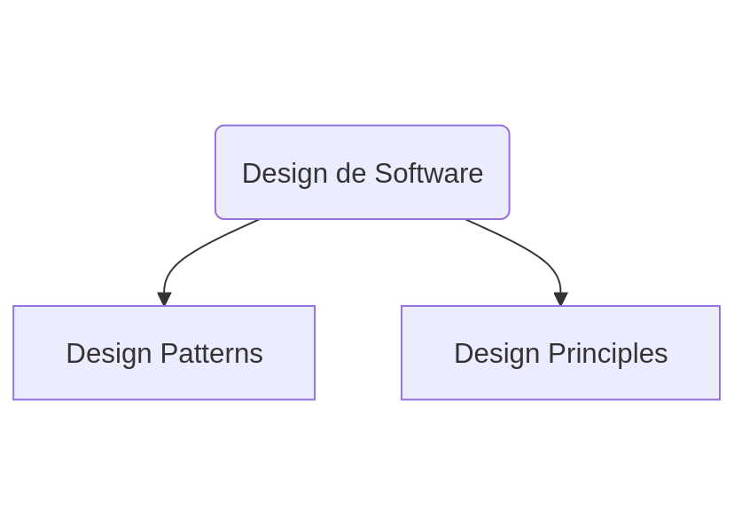
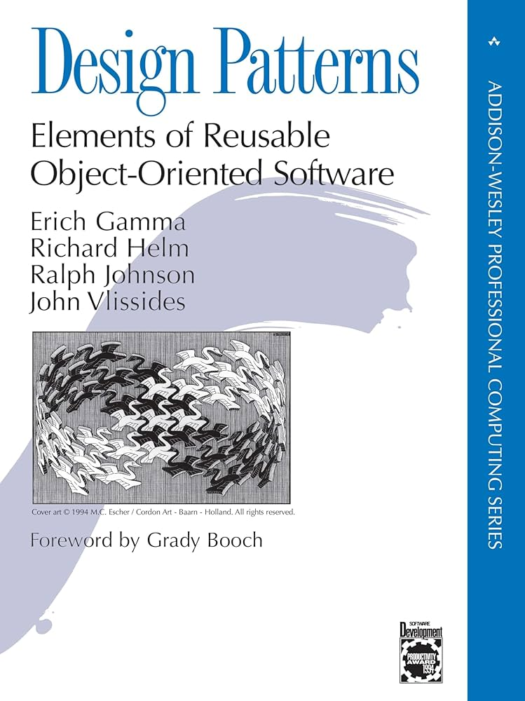

Design Patterns VS Design Principles
O que diabéisso?
Quem sou eu?
Alessandro Feitoza
- Fortaleza, Ceará
- Professor de códigos e outras computarias
- Programador/Dev/Severino
- PHP com Rapadura
- PHPeste
- SertãoDev
Agenda
- Por que isso é importante?
- Definições
- Exemplos Práticos

@alessandro_feitoza
Essa talk não é um mandamento
- É uma coletânea de devaneios que tenho baseados na academia, literatura, e conhecimento das ruas
- Só quero que você abra sua mente e seja mais crítico nas pequenas decisões
- Aproveite o que achar bom e descarte o restante
1 - Por que isso é importante?
Algumas pessoas que fazem código, acham melhor entregar rápido do que entregar bem
e sim Engenheire de Software
E que precisamos desenhar o software


Então poderiamos dizer que design de software se divide nisso?
O melhor seria isso
2 - DEFINIÇÕES
Patterns
Soluções "gerais" repetitiveis, para resolverem problemas comuns.
Cristopher Alexander, 1977
Um padrão descreve uma solução comprovada para um problema recorrente no design
Gang of Four, 1994
Cataloga e explica padrões comuns para resolver problemas de software orientado a objetos.
E como ninguém conhece esse livro?
O mesmo livro com outra capa

Sim, é um livro de arquitetura e urbanismo
Design de Software é uma parte da Engenharia de Software
Design Patterns
Exemplos conhecidos
- Composite
- Observer
- Builder
Principles
Representam guidelines de alto nível ou boas práticas para considerar ao projetar a arquitetura do software.
Design Principles
Exemplos Fundamentais
- SOLID
- DRY
- SoC
Porque comparar os 2? Se são diferentes dos iguais
APLICABILIDADE
CONCEITO
| Principles | Guias para tomar decisões de design. |
|---|---|
| Patterns | Soluções prontas para problemas recorrentes. |
Abordagem
| Principles | Guias para tomar decisões de design. |
|---|---|
| Patterns | Soluções prontas para problemas recorrentes. |
Flexibilidade
| Principles | Guias para tomar decisões de design. |
|---|---|
| Patterns | Soluções prontas para problemas recorrentes. |
Há um üêò elefante
na Sala
bora Feitozo, quero ver códigos
Temos um problema: Criar um esquema de dar descontos nos ingressos do evento
O que usamos ali?
Pattern ou Principle?
E qual?
SOLID
Open/Closed Principle
Podemos simplesmente criar outro tipo de desconto sem afetar as classes existentes
Outro problema: Gravar logs
O que foi isso aqui?

Abstract Factory
Creational Pattern
E com isso a gente vê o quanto essa Teoria é Prática
Mas cuidado, pra não matar uma formiga com uma bazuca
E é isso
Como dizia minha ex:
Temos que terminar
DÚVIDAS?
Referências
@alessandro_feitoza
https://linkedin.com/in/AlessandroFeitoza
slides.feitoza.tec.br